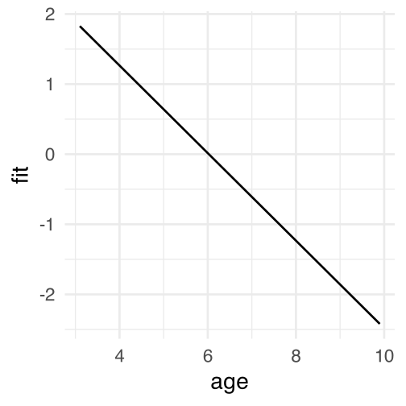
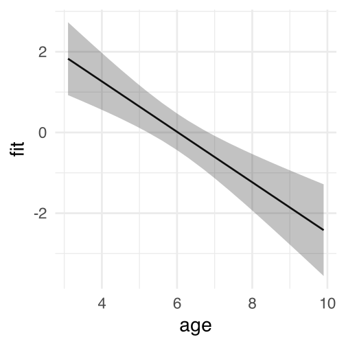
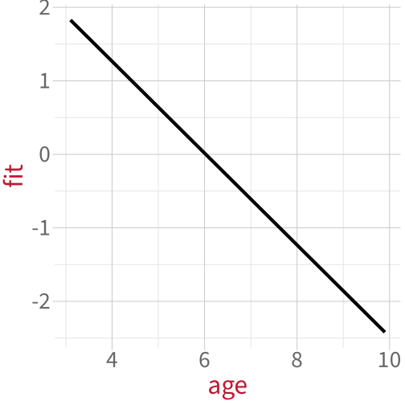
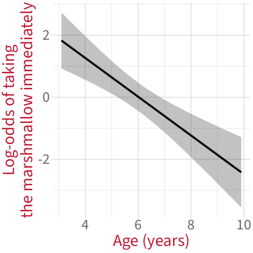
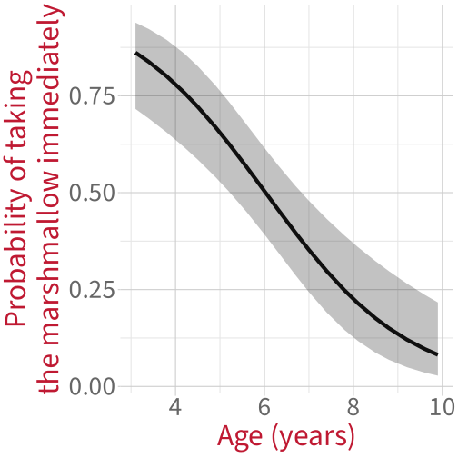
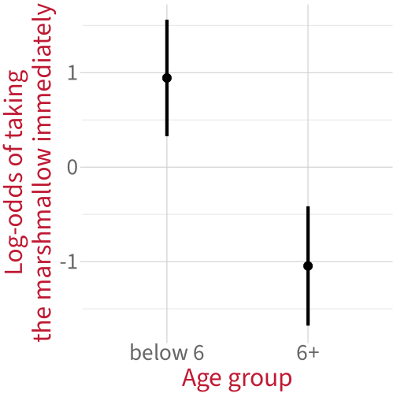
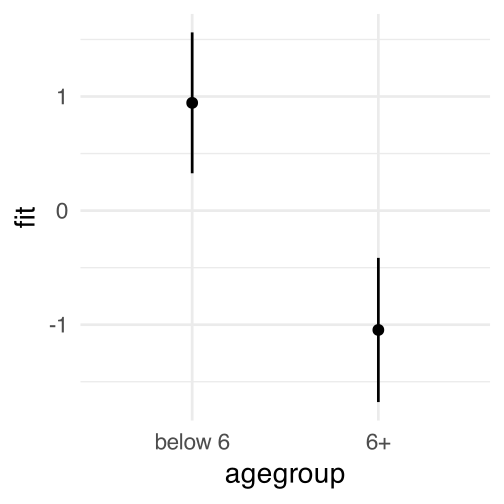
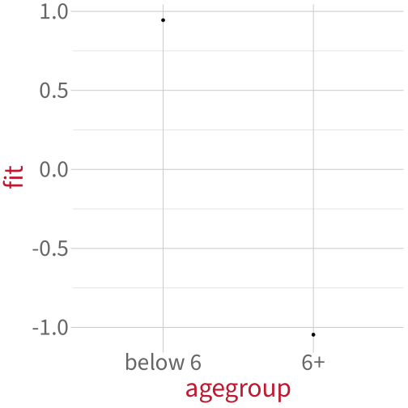
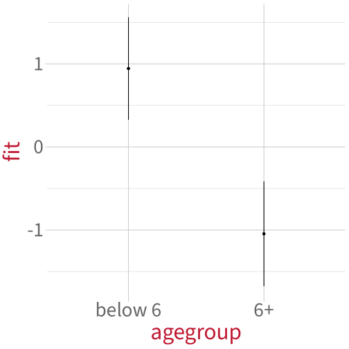

Modelling binary outcomes with logistic regression
Data Analysis for Psychology in R 2
Dr. Elizabeth Pankratz (elizabeth.pankratz@ed.ac.uk)
Department of Psychology University of Edinburgh 2026–2027
Course overview
Introduction to linear models (with Dr. Patrick Sturt)
Introduction to linear regression
Interpreting linear models
Testing individual predictors
Model testing and comparison
Simple linear model: Practice analysis
Extending linear models (with Dr. Elizabeth Pankratz)
Categorical predictors and treatment coding
Sum coding
Assumptions and diagnostics
Bootstrapping
Categorical predictors: Practice analysis (led by Patrick)
Interactions (with Dr. Elizabeth Pankratz)
Mean-centering and numeric/categorical interactions
Numeric/numeric interactions
Categorical/categorical interactions
Correcting for multiple comparisons
Interactions: Practice analysis (led by Patrick)
Logistic regression (with Dr. Elizabeth Pankratz)
Probabilities and log-odds
Modelling binary outcomes with logistic regression
TODO
Logistic regression: Practice analysis (led by Patrick)
Course Q&A and exam prep
This week’s learning objectives
x
Modelling binary outcomes
Example data: The marshmallow experiment
In the marshmallow experiment, a child is shown a marshmallow. The child is told that they can take the marshmallow now, but if they wait, they can have two marshmallows later.
We have data on 100 children’s ages and whether they took the marshmallow immediately (0 = no, 1 = yes).
Recall the model formulation for a standard (not logistic) linear model:
\[
y = \beta_0 + (\beta_1 \cdot x) + \epsilon
\]
In logistic regression, the main new bit appears on the left: we’re now modelling the log-odds of children taking the marshmallow immediately as a function of age.
The right-hand side has the same structure as always (without the \(\epsilon\) error term, for technical reasons to do with how logistic regression models are estimated—you don’t need to worry about that).
Bonus, if you feel inspired: You can also define the “logodds” function more explicitly:
mallow_m1 <-glm( # new: use glm() instead of lm() taken ~ age, # define model formula as usualdata = mallow, # define data as usualfamily =binomial(link ='logit') # new: define the type of outcome # (0s and 1s = "binomial")# and the link function we want to use)
Logistic regression model summary
summary(mallow_m1)
Call:
glm(formula = taken ~ age, family = binomial(link = "logit"),
data = mallow)
Coefficients:
Estimate Std. Error z value Pr(>|z|)
(Intercept) 3.7642 0.8539 4.408 1.04e-05 ***
age -0.6247 0.1367 -4.570 4.87e-06 ***
---
Signif. codes: 0 '***' 0.001 '**' 0.01 '*' 0.05 '.' 0.1 ' ' 1
(Dispersion parameter for binomial family taken to be 1)
Null deviance: 138.59 on 99 degrees of freedom
Residual deviance: 111.21 on 98 degrees of freedom
AIC: 115.21
Number of Fisher Scoring iterations: 4
confint(mallow_m1)
2.5 % 97.5 %
(Intercept) 2.1812542 5.553648
age -0.9123188 -0.372580
Coefficients:
Estimate Std. Error z value Pr(>|z|)
(Intercept) 3.7642 0.8539 4.408 1.04e-05 ***
age -0.6247 0.1367 -4.570 4.87e-06 ***
All of these estimates ^ are in log-odds units.
age:
Increasing age by 1 year is associated with a decrease of 0.62 in the log-odds of taking the marshmallow immediately.
We cannot back-transform the slope to probability space.
Slopes are differences in log-odds, and recall from last week that a given difference in log-odds space can map to lots of various differences in probability space:
This estimate is significantly different from zero (95% CI [–0.91, –0.37], \(p\) < 0.001).
Plotting model-fitted values: Log-odds (1)
The effect() function from the effects library will help us here!
library(effects)effect(term ='age', # the predictor we ultimately want on the x axismod = mallow_m1, # the name of the fitted modelxlevels =20# return fitted values for 20 evenly-spaced `age` values) |>as.data.frame(type ='link') |># return values transformed by link function # (i.e., in log-odds)head(10)
effect(term ='age', mod = mallow_m1, xlevels =20) |>as.data.frame(type ='link') |>ggplot(aes(x = age, y = fit)) +# a line for the model-fitted estimatesgeom_line()

Plotting model-fitted values: Log-odds (3)
effect(term ='age', mod = mallow_m1, xlevels =20) |>as.data.frame(type ='link') |>ggplot(aes(x = age, y = fit)) +# a line for the model-fitted estimatesgeom_line() +# a ribbon for the 95% CIsgeom_ribbon(aes(ymin = lower, ymax = upper ), alpha = .3 )

Plotting model-fitted values: Log-odds (4)
effect(term ='age', mod = mallow_m1, xlevels =20) |>as.data.frame(type ='link') |>ggplot(aes(x = age, y = fit)) +# a line for the model-fitted estimatesgeom_line() +# a ribbon for the 95% CIsgeom_ribbon(aes(ymin = lower, ymax = upper ), alpha = .3 ) +# axis labels for claritylabs(y ='Log-odds of taking\nthe marshmallow immediately',x ='Age (years)' )

Plots in log-odds space show us what our model has estimated.
But for reporting our results to other humans, we should make plots in probability space instead.
Plotting model-fitted values: In probability space (1)
The process is exactly the same, except instead of as.data.frame(type = 'link'), we just write as.data.frame().
effect(term ='age', # the predictor we ultimately want on the x axismod = mallow_m1, # the name of the fitted modelxlevels =20# return fitted values for 20 evenly-spaced `age` values) |>as.data.frame() |># return values in outcome space, # not transformed by link function head(10)
Plotting model-fitted values: In probability space (2)
effect(term ='age', mod = mallow_m1, xlevels =20) |>as.data.frame() |>ggplot(aes(x = age, y = fit)) +# a line for the model-fitted estimatesgeom_line() +# a ribbon for the 95% CIsgeom_ribbon(aes(ymin = lower, ymax = upper ), alpha = .3 ) +# axis labels for claritylabs(y ='Probability of taking\nthe marshmallow immediately',x ='Age (years)' )

Because most people find probabilities more intuitive than log-odds, this is the version of the plot that you’d want to include in a Results section.
Example 2: Categorical predictor (you’ll help me out this time)
Example 2: Categorical predictor
Code
mallow |>ggplot(aes(x =factor(taken), fill = agegroup)) +geom_bar(position ='fill') +labs(y ='Proportion of children',x ='Took marshmallow immediately\n(0 = No, 1 = Yes)',fill ='Age group' )

Specify the model: Mathematical model formulation
Our categorical predictor agegroup will be treatment-coded:
Prediction activity: What will the two model coefficients mean?
woo!
Specify the model: In R
mallow_m2 <-glm( # use glm() instead of lm() taken ~ agegroup, # define model formula as usualdata = mallow, # define data as usualfamily =binomial(link ='logit') # define the type of outcome # (0s and 1s = "binomial")# and the link function we want to use)
Logistic regression model summary
summary(mallow_m2)
Call:
glm(formula = taken ~ agegroup, family = binomial(link = "logit"),
data = mallow)
Coefficients:
Estimate Std. Error z value Pr(>|z|)
(Intercept) 0.9445 0.3150 2.999 0.00271 **
agegroup6+ -1.9904 0.4507 -4.416 1.01e-05 ***
---
Signif. codes: 0 '***' 0.001 '**' 0.01 '*' 0.05 '.' 0.1 ' ' 1
(Dispersion parameter for binomial family taken to be 1)
Null deviance: 138.59 on 99 degrees of freedom
Residual deviance: 116.60 on 98 degrees of freedom
AIC: 120.6
Number of Fisher Scoring iterations: 4
Coefficients:
Estimate Std. Error z value Pr(>|z|)
(Intercept) 0.9445 0.3150 2.999 0.00271 **
agegroup6+ -1.9904 0.4507 -4.416 1.01e-05 ***
All of these estimates ^ are in log-odds units.
(Intercept):
For children below the age of 6 (the reference level), the estimated log-odds of taking the marshmallow immediately are 0.94. Equivalently, the estimated probability of taking the marshmallow immediately is plogis(0.94) = 71.9%.
This estimate is significantly different from zero (95% CI [0.35, 1.60], \(p\) = 0.003).
agegroup:
Moving from children younger than 6 to children aged 6 and above, the log-odds of taking the marshmallow immediately are estimated to decrease by 1.99.
This estimate is significantly different from zero (95% CI [-2.91, –1.13], \(p\) < 0.001).
Plot model-fitted values: Log-odds (1)
Again, we’ll use effects::effect(), with as.data.frame(type = 'link') so that it gives us values on the log-odds scale (the model scale), rather than the probability scale (the outcome scale).
effect(term ='agegroup', # the predictor we ultimately want on the x axismod = mallow_m2 # the name of the fitted model) |>as.data.frame(type ='link')
agegroup fit se lower upper
1 below 6 0.9444616 0.3149702 0.3271314 1.5617918
2 6+ -1.0459686 0.3224127 -1.6778858 -0.4140513
Plot model-fitted values: Log-odds (2)
effect(term ='agegroup', mod = mallow_m2) |>as.data.frame(type ='link') |>ggplot(aes(x = agegroup, y = fit)) +# points for the group mean estimatesgeom_point()

Plot model-fitted values: Log-odds (3)
effect(term ='agegroup', mod = mallow_m2) |>as.data.frame(type ='link') |>ggplot(aes(x = agegroup, y = fit)) +# points for the group mean estimatesgeom_point() +# error bars for the 95% CIsgeom_errorbar(aes(ymin = lower, ymax = upper), width =0 )

Plot model-fitted values: Log-odds (4)
effect(term ='agegroup', mod = mallow_m2) |>as.data.frame(type ='link') |>ggplot(aes(x = agegroup, y = fit)) +# points for the group mean estimatesgeom_point()# error bars for the 95% CIsgeom_errorbar(aes(ymin = lower, ymax = upper), width =0 ) +# axis labels for claritylabs(y ='Log-odds of taking\nthe marshmallow immediately',x ='Age group' )

Plot model-fitted values: Probabilities
Exact same process except without type = 'link' in the second line!
effect(term ='age', mod = mallow_m1, xlevels =20) |>as.data.frame() |>ggplot(aes(x = age, y = fit)) +# points for the group mean estimatesgeom_point()# error bars for the 95% CIsgeom_errorbar(aes(ymin = lower, ymax = upper), width =0 ) +# axis labels for claritylabs(y ='Probability of taking\nthe marshmallow immediately',x ='Age group' ) +# expand y axis to range between # 0 and 1ylim(0, 1)

How can we figure out the difference in probability space between two values of our predictor?
How can we figure out the difference in probability space between two values of our predictor?


 Work on exercises in labs
Work on exercises in labs Complete the weekly quiz
Complete the weekly quiz Consult the
Consult the  Ask questions anonymously on Piazza
Ask questions anonymously on Piazza We really like seeing you in office hours!
We really like seeing you in office hours!